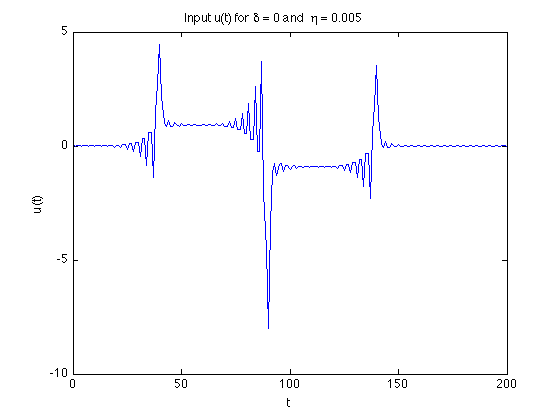
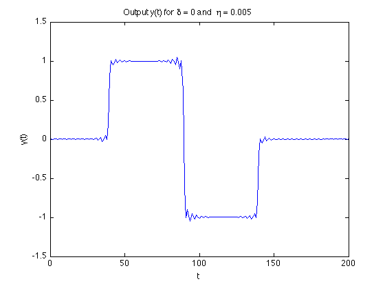
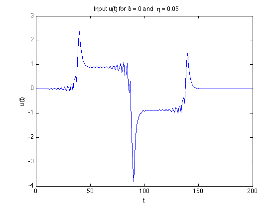
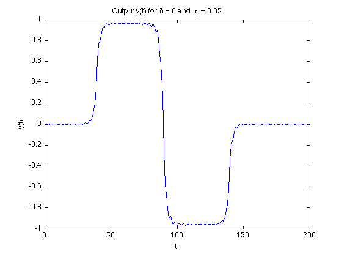
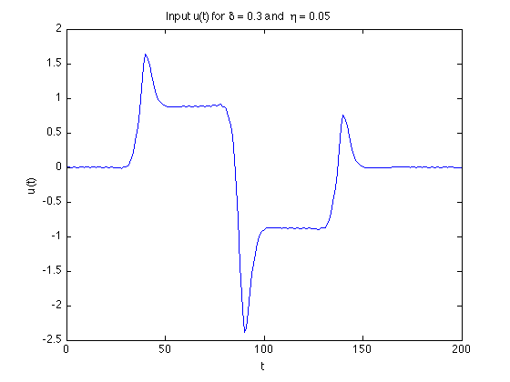
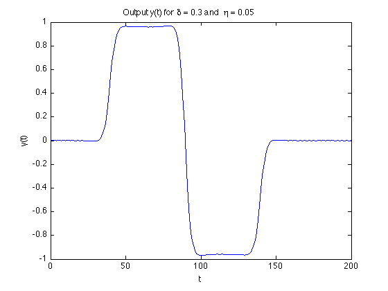

Example 6.3: Optimal input design
m = 201; n = 201; N=200;
t = [0:m-1]';
h = (1/9)*((.9).^t) .* (1 - 0.4*cos(2*t));
H = toeplitz(h', [h(1) zeros(1,n-1)]);
m1 = round(m/5); m2 = round(m/4); m3 = round(m/4); m4 = m-m1-m2-m3;
y_des = [zeros(m1,1); ones(m2,1); -ones(m3,1); zeros(m4,1)];
D = [-eye(n-1) zeros(n-1,1)];
D = D + [zeros(n-1,1) eye(n-1)];
delta = [0 0 0.3];
eta = [0.005 0.05 0.05];
disp('Finding the optimal input for ');
for i = 1:length(delta)
disp(['* delta = ' num2str(delta(i)) ' and eta = ' num2str(eta(i))]);
cvx_begin quiet
variable u(N+1)
minimize ( square_pos(norm(H*u - y_des))/(N+1) + ...
eta(i)*square_pos(norm(u))/(N+1) + ...
delta(i)*square_pos(norm(D*u))/N )
cvx_end
switch(i)
case 1
figure(1); plot(t,u); xlabel('t'); ylabel('u(t)');
title(['Input u(t) for \delta = ' num2str(delta(i)) ' and \eta = ' num2str(eta(i))]);
figure(2); plot(t,H*u); xlabel('t'); ylabel('y(t)');
title(['Output y(t) for \delta = ' num2str(delta(i)) ' and \eta = ' num2str(eta(i))]);
case 2
figure(3); plot(t,u); xlabel('t'); ylabel('u(t)');
title(['Input u(t) for \delta = ' num2str(delta(i)) ' and \eta = ' num2str(eta(i))]);
figure(4); plot(t,H*u); xlabel('t'); ylabel('y(t)');
title(['Output y(t) for \delta = ' num2str(delta(i)) ' and \eta = ' num2str(eta(i))]);
case 3
figure(5); plot(t,u); xlabel('t'); ylabel('u(t)');
title(['Input u(t) for \delta = ' num2str(delta(i)) ' and \eta = ' num2str(eta(i))]);
figure(6); plot(t,H*u); xlabel('t'); ylabel('y(t)');
title(['Output y(t) for \delta = ' num2str(delta(i)) ' and \eta = ' num2str(eta(i))]);
end
end
Finding the optimal input for
* delta = 0 and eta = 0.005
* delta = 0 and eta = 0.05
* delta = 0.3 and eta = 0.05
     